Pasos a realizar
Los pasos a realizar para realizar un ejercicio son los siguientes:
Disposición de ventanas
Las capturas siguientes corresponden al editor Visual Studio Code. En los apuntes de Informática general de mclibre.org puede encontrar las capturas correspondientes al editor Brackets.
El número de ventanas y su disposición es una elección personal que depende también de la resolución y tamaño de la pantalla (o si se dispone de una o dos pantallas). Se propone a continuación una posible disposición en tres ventanas: una ventana de Visual Studio Code y dos ventanas de navegador. Para alternar entre ventanas utilizaríamos el atajo de teclado Alt+Tab):
Las ventanas pueden ser las siguientes:
- Abra en Visual Studio Code la página web del ejercicio sin formatear haciendo clic en el fichero:

- Abra una primera ventana del navegador. Abra en ella la página web del ejercicio sin formatear (en la lección Configuración recomendada para el curso HTML y CSS se explica cómo crear un atajo de teclado para hacerlo fácilmente desde Visual Studio Code):
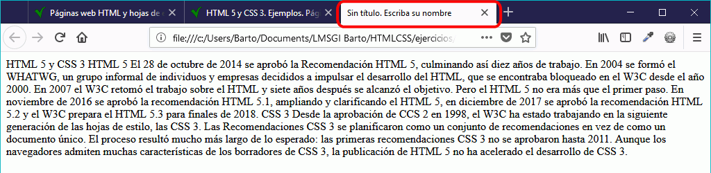
- Abra una segunda ventana del navegador con dos pestañas:
La disposición de las ventanas pueden ser las siguientes:
- ventana de Visual Studio Code ocupando la mitad izquierda de la pantalla y primera ventana de navegador ocupando la mitad derecha de la pantalla, para ir viendo el estado de nuestra página a medida que la editamos.
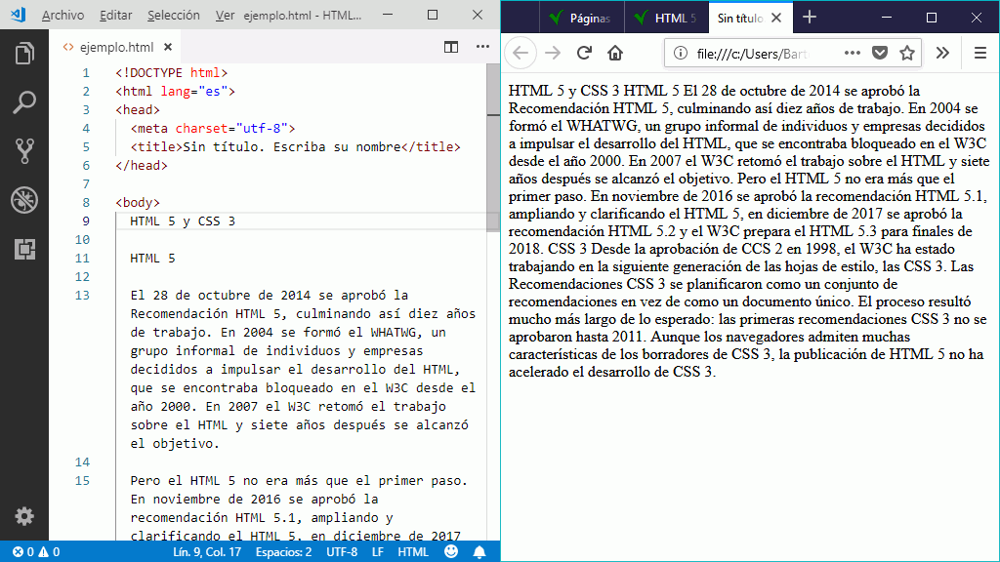
- Visual Studio Code ocupando la mitad izquierda de la pantalla y primera ventana de navegador ocupando la mitad derecha de la pantalla, para ver el resultado final que debemos conseguir e ir editando al mismo tiempo. En Visual Studio Code se puede minimizar la barra lateral para ampliar el espacio disponible para editar el documento.
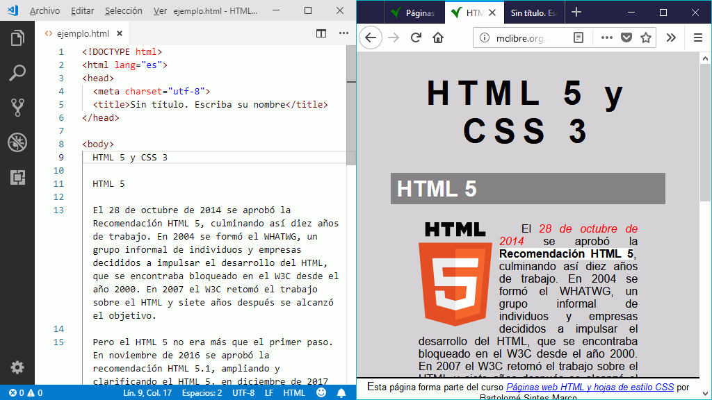
Crear y enlazar la hoja de estilo
- En Visual Studio, abra la página web de la plantilla de ejercicio. El bloque <head> no contiene todas las etiquetas recomendadas, entre ellas el enlace a la hoja de estilo:
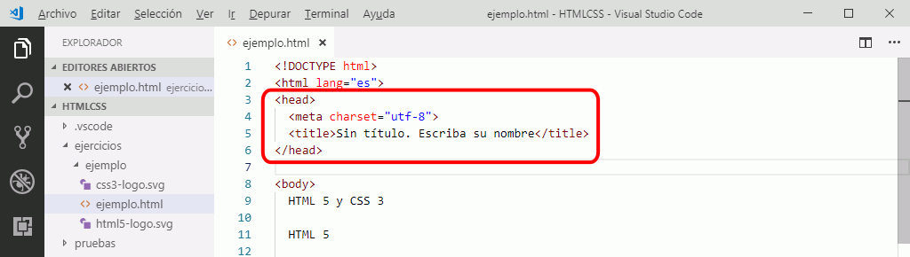
- En la lección Qué es una página web se muestran las etiquetas mínimas recomendadas. Copie y pegue las dos líneas faltantes:
<head>
<meta charset="utf-8" />
<title>HTML 5</title>
<meta name="viewport" content="width=device-width, initial-scale=1.0" />
<link rel="stylesheet" type="text/css" href="estilo.css" />
</head>

- Modifique el nombre de la hoja de estilo. El nombre de la hoja de estilo puede ser el mismo nombre de la página web o un nombre genérico (por ejemplo, estilo.css).
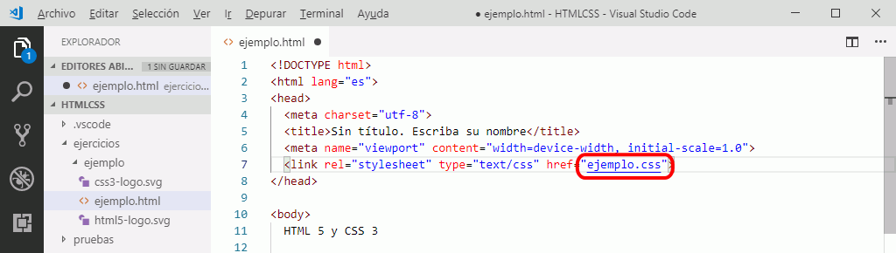
- Al situar el cursor sobre el enlace a la hoja de estilo, Visual Studio Code ofrece la posibilidad de abrir el archivo. Haga Ctrl+clic para abrir la hoja de estilo en una nueva pestaña de Visual Studio Code
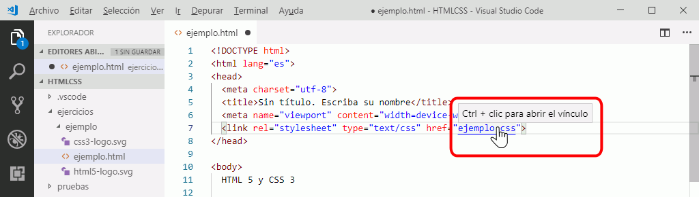
- Como el fichero no existe, Visual Studio Code muestra una ventana de aviso. Haga clic en "Crear archivo"
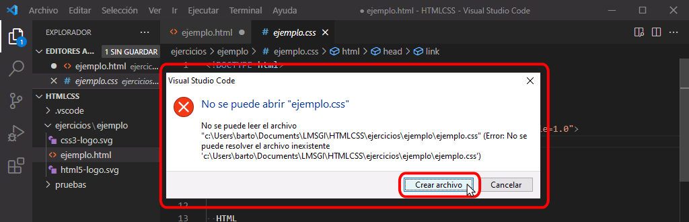
- El archivo se creará (en este caso, en la misma carpeta donde está la página web) y se mostrará en una nueva pestaña:
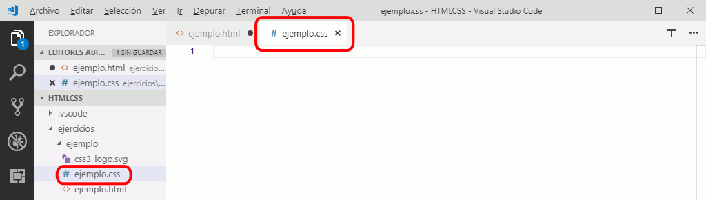
- Para comprobar que la hoja está correctamente enlazada, escriba alguna regla en la hoja de estilo (por ejemplo, el color de fondo de la página).

- Guarde los archivos (página web y hoja de estilo) y en el navegador actualice la página para comprobar que se aplica el estilo.
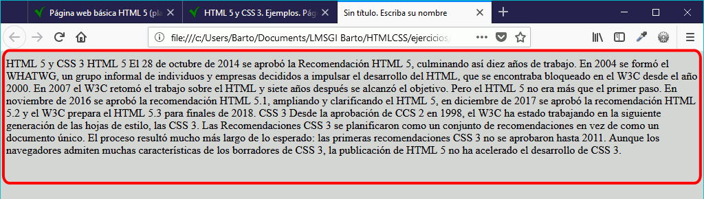
Asignar las etiquetas HTML en la página web
El objetivo de los ejercicios es que el alumno aprenda a usar etiquetas y propiedades.
No se trata solamente de que la página creada por el alumno sea lo más parecida posible al original, sino que el alumno debe intentar utilizar las mismas etiquetas o propiedades. Es verdad que en muchos casos el resultado final se puede obtener combinando etiquetas y propiedades distintas a las utilizadas en la página de muestra, pero se pide al alumno que intente deducir el mayor número posible analizando la página (sin recurrir ni a las herramientas de desarrollador ni a mirar el código fuente).
Para deducir muchas de las etiquetas que se han utilizado en la página de muestra, desactive la hoja de estilo. Empiece el ejercicio añadiendo todas las etiquetas deducidas a partir de vista sin estilo.
A continuación, vuelva a activar la hoja de estilo. Cuando se activa la hoja de estilo podrá deducir la presencia de más etiquetas, que deberá añadir al ejercicio, y deberá deducir las propiedades de la hoja de estilo, que deberá añadir a su hoja de estilo.
Si en cualquiera de estas dos fases un resultado puede obtenerse con distintas etiquetas o propiedades, se puede utilizar cualquiera de ellas. Por ello, una vez terminado el ejercicio conviene revisar el código fuente original, para aprender en su caso otras formas de conseguir el resultado.
- Para desactivar la hoja de estilo en Firefox, elija el menú . Para hacer visible el menú, pulse la tecla Alt.
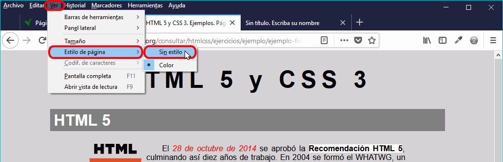
- Al quitar la hoja de estilo, el navegador aplica la hoja de estilo por omisión, lo que permite reconocer la mayoría de etiquetas (en los casos en que hay ambigüedad, se puede utilizar cualquiera de las que dan el mismo resultado).
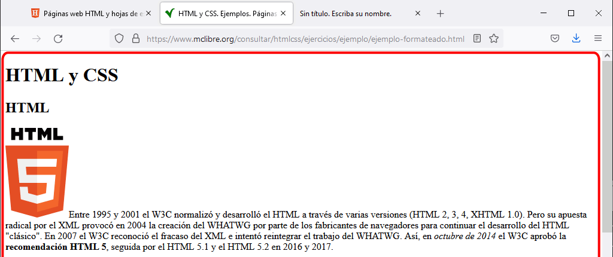
- Una vez averiguadas las etiquetas de la vista sin estilo, active de nuevo la hoja de estilo con el menú . Este menú puede ofrecer la opción , si el enlace a la hoja de estilo no tiene atributo title, o cualquier otro texto (en el ejemplo se muestra el texto ya el atributo title del enlace a la hoja de estilo tiene el valor "Color").
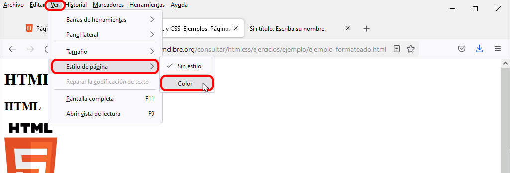
Para ayudar a la creación de etiquetas en Visual Studio Code, se recomienda instalar la extensión Close HTML/XML tag.
Corregir errores en las páginas web y en las hojas de estilo
 Este apartado está pendiente de actualizar para Visual Studio Code. Actualmente hace referencia a Brackets, el editor que utilicé durante el curso 2015/16.
Este apartado está pendiente de actualizar para Visual Studio Code. Actualmente hace referencia a Brackets, el editor que utilicé durante el curso 2015/16.
Las páginas web y las hojas de estilo no deben contener errores.
Para facilitar la identificación de errores, se recomienda instalar las extensiones W3CValidation y CSSLint de Brackets. Pero no basta con tener instaladas las extensiones; es necesario fijarse a menudo en el icono de notificación de errores de estas extensiones mientras se están editando la página web o la hoja de estilo.
Soluciones de los ejercicios
La "solución" de cada ejercicio es el propio código fuente HTML y CSS de la página web y de su hoja de estilo.
Para ver el código fuente de una página, haga clic derecho sobre el texto de la página (no sobre las imágenes) y elija la opción "Ver código fuente de la página" o utilice el atajo de teclado Ctrl+U.
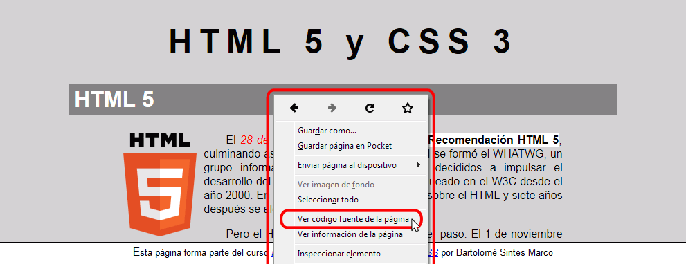
Se abrirá una pestaña mostrando el código fuente de la página formateada (es decir, la mitad de la "solución" del ejercicio). Para ver la hoja de estilo, haga clic en el enlace a la hoja de estilo.
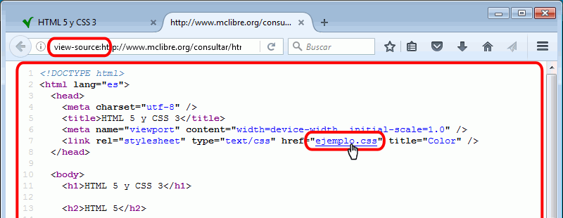
En la misma pestaña se mostrará la hoja de estilo (es decir, la otra mitad de la "solución" del ejercicio).
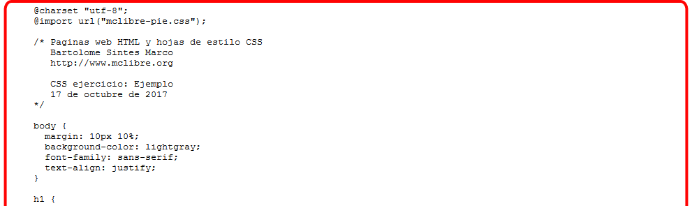
Nota: En el examen, el alumno tan sólo dispondrá de capturas de pantalla, no dispondrá de página de comentarios ni podrá acceder al código fuente.
Consejos y comentarios generales
- Se aconseja empezar añadiendo las etiquetas e imágenes en la página web y después dar las propiedades de estilo, pero se puede ir alternando entre las dos tareas, a elección del alumno.
- Se aconseja al alumno que en un primer momento intente realizar el ejercicio sin consultar la página de comentarios ni consultar el código fuente de la página a reproducir.
Si no es capaz de resolverlo, consulte la página de comentarios que le dará pistas sobre las etiquetas y propiedades de estilo utilizadas.
Si aún así no es capaz de resolverlo, consulte el código fuente de la página formateada.
- Se puede considerar que se ha completado completamente un ejercicio cuando las páginas de muestra y la del alumno tienen un aspecto idéntico en el navegador, pero se pueden admitir pequeñas diferencias, como por ejemplo que dos distancias o tamaños sean ligeramente diferentes.
En el examen, se admitirán como válidas pequeñas diferencias entre las páginas de muestra y la del alumno en lo que respecta a tamaños, distancias o colores.
- En algunos ejercicios puede ser necesario comparar las páginas para diferentes tamaños de ventana.
- Como en muchos casos se pueden conseguir los mismos resultados de varias maneras, una vez completado un ejercicio se aconseja siempre consultar el código fuente de la página de muestra y su hoja de estilo, para comparar.
En el examen, cuando un mismo resultado se pueda conseguir de varias maneras, normalmente se admitirán como válidas todas ellas.
- Los ejercicios incluyen en la parte inferior un enlace a la página principal de los apuntes que no es necesario reproducir al hacer los ejercicios:
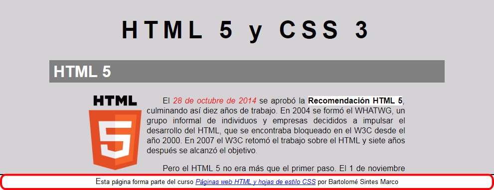